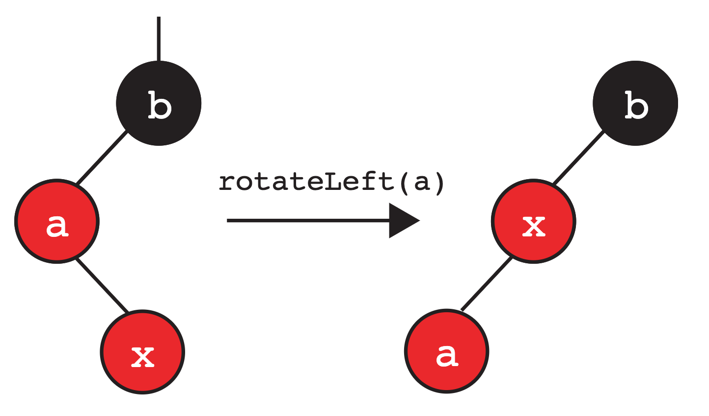
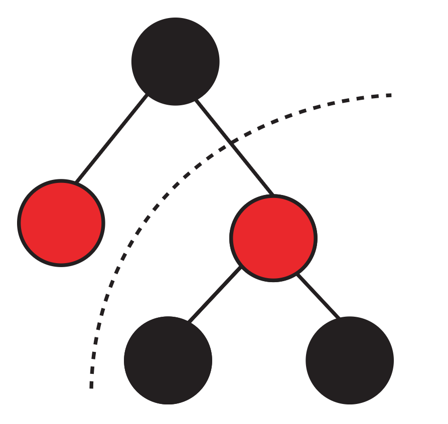
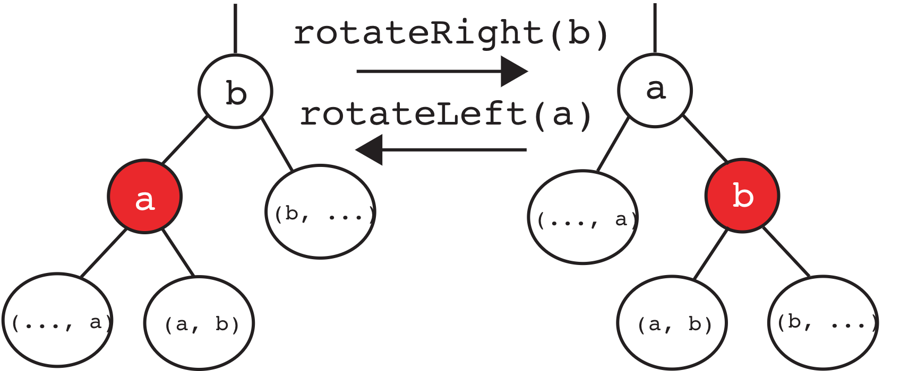

实验 07：左倾红黑树
常见问题
本实验的常见问题可以在 这里 找到。
开始之前
像往常一样，从
skeleton
拉取实验 07 文件并在 IntelliJ 中打开它们。
学习目标
在本实验中，我们将实现左倾红黑树。
简介
在之前的实验中，我们分析了二叉搜索树中访问和插入算法的性能。然而，在某些情况下，我们总是假设树是 平衡的 ——正如我们所看到的，有可能产生一棵 细长的 树，这会影响我们数据结构的性能。
非正式地说，一棵树是"平衡的"意味着从根到每个叶子的路径长度都大致相同。任何只查看树的每一层一次的算法——比如在二叉搜索树中搜索一个值——只查看层数。对于二叉搜索树，我们能拥有的最少层数是关于节点数的对数（即 \(\log N\)）。
为了保持这种"平衡"的特性，我们想要防止获得一棵"细长"树的最坏情况，这会导致更差的性能时间。这就是平衡搜索树/B树的用武之地——它们实际上是自平衡的，并将保持我们想要的"平衡"特性。
然而，在本实验中，我们不会专注于实现平衡搜索树——为什么？虽然它们确实保证从根到任何叶子的路径是 \(O(\log N)\)，但它们的编码也出了名的困难和繁琐，常见操作有许多边界情况。它们仍然被广泛使用并提供很多好处，但它们确实有缺点。 请记住，在整个实验中我们仍会引用平衡搜索树（从现在开始，任何对平衡搜索树的引用都是指 2-3 树）。
然后我们将注意力转向一个相关的数据结构： 左倾红黑树 。我们建议你在开始本实验之前复习相关的课程幻灯片。
链接 vs 节点
请不要跳过这一部分。在继续实验的其余部分之前，阅读这一部分对你来说很重要。 如果你不阅读这一部分，会困难得多。
在课堂上，我们用 链接 介绍了 LLRB 的概念。然而，在本实验中，我们不会用链接来表示我们的 LLRB。相反，我们将使用 节点 。主要原因是用链接实现比用节点实现 困难得多 。为了说明这一点，请看下面我们在课堂上如何介绍它的可视化的例子。

在本实验中，由于我们将处理有色节点——红色链接与其连接节点之间的关系可以定义如下：

最初，
A
通过红色链接连接到
B
。但是如果我们在表示中使用有色节点而不是链接，
A
本身将被染成红色。上面的可视化是为了展示红色链接如何映射到有色节点，所以请在实验的其余部分记住这一点！
请注意有色链接和相应有色节点之间的关系，因为在实验的其余部分，我们将在示例和描述中使用有色节点，以使实验实现更容易。
左倾红黑树
本质上，LLRB 只是一棵二叉搜索树，但有一些额外的与将每个节点"染成"红色或黑色相关的不变量。这种"染色"在 2-3 树和 LLRB 之间创建了一对一的映射！ 特别是，每棵 2-3 树恰好对应一棵 LLRB，反之亦然。
结果相当惊人：LLRB 保持了 2-3 树的平衡性，同时继承了所有正常的二叉搜索树操作，只需额外的内务处理。
左倾红黑树 树属性
我们现在指定 LLRB 树的一些属性。特别是，我们使用有效 LLRB 树和 2-3 树之间的一对一映射来推导其中一些属性。
- 使用有色节点作为我们的表示，根节点必须染成黑色。
- 我们对红色节点的解释是，它们与父节点在同一个 2-3 节点中。根节点没有父节点，所以它不能是红色的。
- 如果一个节点有一个红色子节点，它必须在左边。
- 这使得树向左倾斜。
- 没有节点可以有两个红色子节点。
- 如果一个节点有两个红色子节点，那么两个子节点都与父节点在同一个 2-3 节点中。这意味着相应的 2-3 节点包含 3 个键，这是不允许的。
- 没有红色节点可以有红色父节点（每个红色节点的父节点都是黑色的）。
- 如果一个红色节点有一个红色父节点，那么红色子节点和红色父节点都与红色父节点的父节点在同一个 2-3 节点中。这意味着相应的 2-3 节点包含 3 个键，这是不允许的。
- 在一棵平衡的 LLRB 树中，每条到空引用的路径都经过相同数量的黑色节点。
- 在一棵平衡的 2-3 树中，每个空节点到根的距离都相同。我们还知道，LLRB 树中的每个黑色节点恰好对应于等效 2-3 树中的一个节点。因此，LLRB 树中的每个空节点到根的黑色节点数量相同。
插入 左倾红黑树 树
插入 LLRB 树从常规的二叉搜索树插入算法开始 ，我们搜索找到适当的叶子位置。
每当我们向 LLRB 插入一个节点时，我们都将其作为红色节点插入。
然而，一旦我们放置了节点，这可能会破坏 LLRB 不变量，所以我们需要可以"恢复"LLRB 属性的额外操作。我们知道有效 LLRB 与 2-3 树之间存在一一对应关系。让我们使用这种对应关系来尝试推导这些操作。
我们将介绍不变量被破坏时的不同情况以及修复它们的适当操作。
不变量：如果一个节点有一个红色子节点，它必须在左边
如前所述，我们插入的节点将是红色的。假设我们将节点插入到我们的 LLRB 中，它最终成为节点
a
的
右子节点
（这意味着我们节点中的值大于
a
）。
让我们假设节点
a
的左子节点是黑色的或不存在。
这破坏了我们的不变量，即"如果一个节点有一个红色子节点，它必须在左边"。由于我们不能有任何右倾红色节点，我们需要在父节点上
左旋
。示例如下：

不变量：没有节点可以有两个红色子节点
让我们考虑另一种情况。与上面类似，我们将节点作为红色节点插入 LLRB，它最终成为节点
b
的
右子节点
（在本例中）。当节点
b
的左子节点是红色节点时会发生什么？这会破坏"没有节点可以有两个红色子节点"的不变量。然后我们对父节点执行"颜色翻转"操作。在这里，我们对
b
应用颜色翻转操作，翻转它的颜色和它的子节点的颜色。

我们稍后会回到这种配置。
不变量：没有红色节点可以有红色父节点（每个红色节点的父节点都是黑色的）
这可以分为下面定义的两种情况。
两个连续的左倾红色节点。
如果我们插入节点，它最终成为红色节点的左子节点会发生什么？在这种情况下，我们需要调整操作并"右旋"（ 换句话说，不可能有两个左倾红色节点 ）。
右旋是左旋的反操作！如果应用于新根，它将给我们返回原始子树。
在这种情况下，我们在
b
上右旋：

此时，我们注意到它与之前的情况模式相同，所以我们对
a
应用颜色翻转。
带有右倾红色子节点的红色节点。
在另一种情况下，我们可能会让我们的节点成为一个已经是红色的节点的右子节点。在这种情况下，我们然后应用我们的左旋操作。
如下所示，在这个例子中我们在
a
上左旋，我们得到：

请注意，这与上面提到的不变量有关，即我们不能有右倾红色节点。
在这里，我们又遇到了前面的情况，所以我们知道我们可以在
b
上右旋，并对根节点
x
应用颜色翻转。
向上传播
等等——注意我们刚刚讨论的一些情况最终都进行了颜色翻转。如果我们修改的子树是一个 右子树 ，而树的其余部分看起来像这样会怎样：

就像在 2-3 树中向上推一个键可能导致父节点过满一样， 执行这些转换可能 也会 违反 左倾红黑树 不变量 ，再次给我们带来这三种情况之一。我们解决这些情况，直到我们：
- 没有任何被破坏的不变量
- 翻转根节点的颜色
这意味着执行其中一些操作（颜色翻转、右旋或左旋）可能最终会破坏另一个不变量，导致更多操作。当我们尝试解决这些情况时，这些转换实际上会沿着 LLRB 树向上工作，直到我们根据上述条件解决它们。
在某些情况下，我们必须记住在我们的表示中将根节点翻回黑色。
左倾红黑树 插入总结
这一部分对实验最有帮助，因为你可以参考下面的图表来了解如何执行这三个操作。考虑一下如何将旋转操作和颜色翻转操作转换为涉及节点和指针重新分配的问题。
我们讨论了三种操作，可以用来在插入节点后"修复"LLRB 不变量。因为如上所述可能会有向上传播，让我们尝试更直观地概括我们的操作（特别是对于我们的旋转）。
我们有两种旋转，可以用来将右子节点或左子节点向上移动到它们父节点的位置：

以下是当我们执行
rotateRight(b)
时会发生什么的简要描述：
-
子树的根已从
b变为a。 -
a和b已经移动到"右边"。 - 两个节点交换颜色，以便新根与旧根颜色相同。
- 重组后的子树仍然满足二叉搜索性质。
以下是当我们执行
rotateLeft(a)
时会发生什么的简要描述：
-
子树的根已从
a变为b。 -
a和b已经移动到"左边"。 - 两个节点交换颜色，以便新根与旧根颜色相同。
- 重组后的子树仍然满足二叉搜索性质。
我们还有颜色翻转操作：
左倾红黑树 树实现
你读过这个 部分 了吗？如果还没有，请在开始实现这个实验之前先读一下。
在开始之前，请确保通读整个类
RedBlackTree.java
，特别是提供的嵌套节点类。确保也阅读每个方法的注释！
练习：颜色翻转
让我们首先考虑对 LLRB 树实现至关重要的颜色翻转操作。给定一个节点，这个操作只是翻转它的颜色和它的子节点的颜色。
在
RedBlackTree.java
中实现
flipColors
方法。
练习：旋转
我们已经看到我们可以旋转树来平衡它而不违反二叉搜索树不变量。现在，让我们自己实现它！
对于你的实现，确保交换旧根和新根的颜色！
提示：这两个操作是对称的。代码应该有很大不同吗？如果你发现自己卡住了，看看上面显示的例子！
在
RedBlackTree.java
中，实现
rotateRight
和
rotateLeft
。
练习：
insert
我们现在将在
RedBlackTree.java
中实现
insert
。我们已经为你提供了一些带有注释的逻辑结构。
insert
的第一部分应该处理正常的二叉搜索树插入。然后你需要处理导致其中一个操作（
rotateLeft
、
rotateRight
、
colorFlip
）发生的不同情况。
确保你非常仔细地遵循所有情况的步骤！
确保使用你已经实现的方法（
rotateRight
、
rotateLeft
、
flipColors
）来简化代码编写。
辅助方法
是Red
已经在框架代码中提供给你了，所以一定要使用它！
在
RedBlackTree.java
中实现
insert
方法。
测试
所有测试都已在本地提供给你。如果你通过了
TestRedBlackTree.java
中的所有测试，你将在 Gradescope 上获得满分。整个测试过程中都提供了注释，以帮助你进一步调试。
交付成果
在
RedBlackTree.java
中完成以下方法：
-
flipColors -
rotateRight和rotateLeft -
insert
本实验价值 5 分。